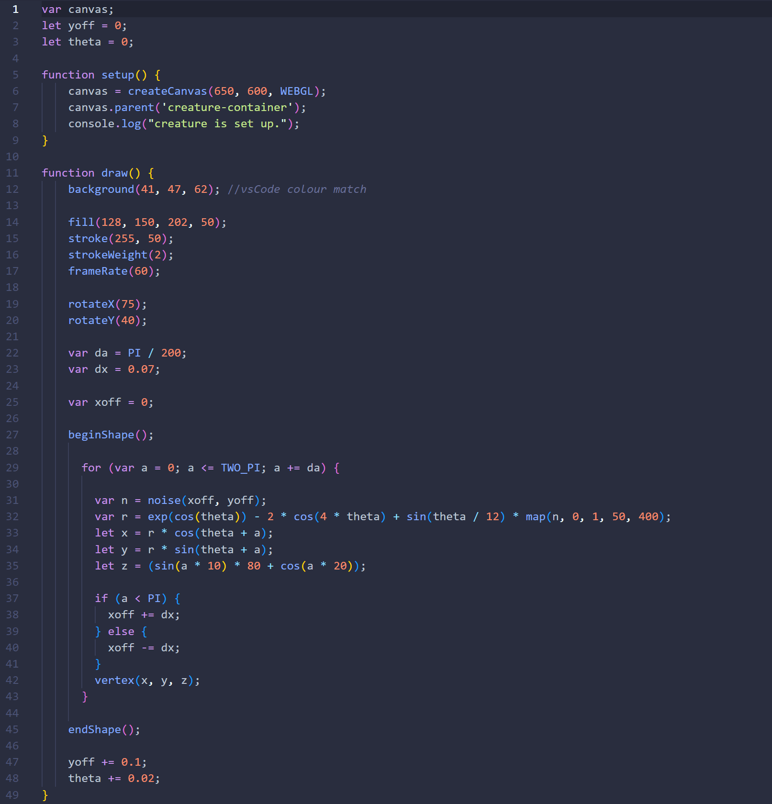

The butterfly curve is given by a polar equation, which traces out the figure-eight shape of the wings of a butterfly. It creates a continuous closed curve that is symmetric about the origin, and each loop crosses through the origin. I was able to find a program from Kantel-Chaos-Team which translated this equation into Python code. Then I ported that code into JavaScript, and altered the values until I landed on this jellyfish or coral-like creature. The hardest part was turning the Python code into JavaScript when I didn't fully understand the mathematics that was causing the curve to be drawn. But once it was rendered, I was able to make it 3-dimensional by adding WEBGL capabilities, an arbitrary z value I wrote, and rotating the shape.
